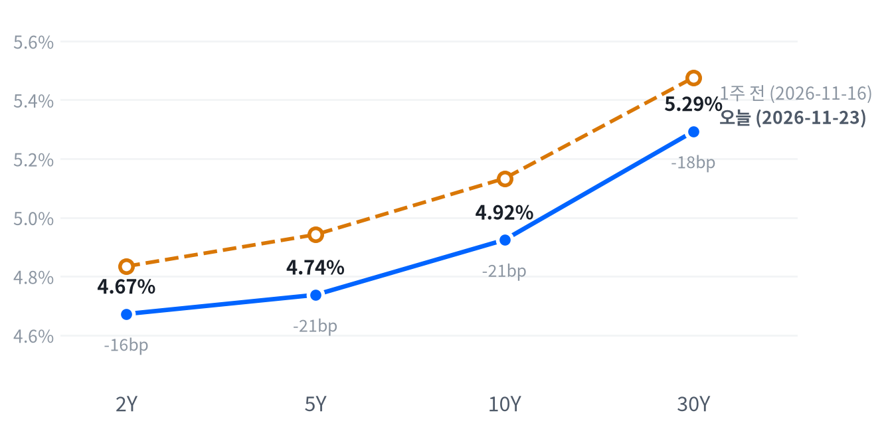

엔비디아 이사회가 젠슨 황을 CEO로 복귀시키자 미국 증시는 2025년 4월 이후 가장 큰 하루 상승을 기록했고, 반도체·메모리·광통신 종목이 함께 급등했다. 상승은 거의 전부 개장 전에 나왔고 정규장에서는 시가 부근에 머물렀다.
우리는 이 반등을 지난주 한쪽으로 쏠린 매도 포지션의 되감기로 보고, 11월 20일의 AI 가치 재평가 해석을 수정한다. 반등이 이어질지는 12월 3일 황 CEO의 상원 증언과 12월 4일 분기 보고서 제출 기한을 지나며 기술 업종이 시장보다 강한지로 확인한다.
11월 23일 엔비디아 이사회가 사임 수리 12일 만에 젠슨 황을 CEO로 복귀시키면서 엔비디아가 31.48% 뛰어 2003년 이후 최고의 하루를 보냈다. S&P 500은 4.73% 올라 2025년 4월 이후 가장 큰 하루 상승을 기록했다는 보도가 나왔다. 지난주 AI 하드웨어 매도로 세 지수가 모두 크게 밀린 뒤 맞은 첫 거래일이었고, 반도체·메모리·광통신 종목이 일제히 급등했다.
11월 20일에 걸어 둔 조건은 장기물 기준으로만 충족됐다. 11월 23~24일에 금리가 오르지 않는데 XLK가 11월 20일 종가 대비 S&P 500보다 3%p 이상 되돌리면 해석을 수정한다고 했고, XLK는 S&P 500보다 4.24%p 앞섰다. 10년물 금리는 0.8bp 내려 「금리가 오르지 않는다」는 다리를 채웠지만, 2년물 금리는 3.8bp 올라 그 다리를 채우지 못했다. 그래서 장기물 기준이라는 단서를 붙여 그날 급락을 AI 기업 가치의 재평가로 본 해석을 수정해, 지난주 하락에는 한쪽으로 쏠린 매도와 엔비디아 지배구조 할인이 크게 섞여 있었다고 본다. 되돌림의 재료는 그날 반론으로 든 상장 물량·옵션 만기가 아니라 이사회 결정이어서, 기술적 매도 설명이 그대로 확인된 것은 아니다. 이날 반등도 같은 연장선에서 매도 포지션의 되감기로 본다. 상승은 거의 전부 개장 전 갭에서 나왔고, 동일가중 지수가 시가총액가중보다 덜 올라 참여가 좁았으며, 엔비디아 지배구조와 관계없는 아날로그 반도체까지 10% 안팎 뛰었다. 키움증권 김승혁 연구원은 이번 주에는 옵션 만기 이후 매도 쏠림의 되돌림과 젠슨 황 복귀 기대로 기술적 반등을 시도하겠지만, 칩 우회 유통 의혹과 회계 조사 탓에 추세 전환은 어렵다고 보고 박스권 흐름을 전망했다. 가장 강한 반론은 AI 하드웨어의 핵심 불확실성이 사라진 재평가다. 황 복귀가 지난주 하락의 주된 원인이던 리더십 공백을 메웠고, 이번 결정이 AI 거래의 핵심 불확실성 하나를 없앤다는 전략가의 평가도 보도됐다. 시장이 어느 쪽을 가격에 넣었는지 보여 줄 옵션·포지션 측정치는 구하지 못해, 시장 기대와 우리 해석의 차이는 모른다.
반도체·AI 하드웨어 업종의 상대수익률은 하루 만에 크게 좋아졌지만 한 달 흐름을 되돌리지는 못했다. 기술 업종은 1개월로 보면 아직 11.38% 내린 상태다. 반등이 포지션 되감기라면 매도 압력이 사라진 뒤 상대 강세가 빠르게 식고, 불확실성 제거라면 하루 9% 가까운 상승이 이미 가격에 들어가 지금 따라붙는 기대값이 불분명하다. 그래서 이 하루로 새 아이디어를 내지 않는다. 판단의 시계는 12월 4일까지 8거래일이고, 그 사이 11월 25일 PCE 물가·GDP, 12월 3일 황 CEO의 상원 은행위원회 증언, 12월 4일 엔비디아 분기 보고서(10-Q) 제출 기한과 AI 인프라 관련 신규 관세 발효가 차례로 온다. 11월 26일 휴장과 27일 조기 폐장이 끼어 있어 거래가 얇은 구간도 포함된다. XLK나 반도체 ETF로 S&P 500 대비 상대 강도를 표현하는 비용은 차입·옵션 자료가 없어 따지지 못한다. 원화 현금과 단기채 쪽에서는 주식이 급반등한 날에도 2년물 금리 되돌림이 작아, 미국 단기 금리를 정책 경로 변화로 읽기에는 아직 이르다.
포지션 되감기 판단은 11월 23일 종가 대비 12월 4일 종가의 XLK 누적 등락률에서 S&P 500 누적 등락률을 뺀 값으로 확인한다. 이 값이 -3.44%p 이하이면 판단을 뒷받침하고, +3.44%p 이상이면 판단이 약해져 불확실성 제거에 따른 재평가를 우선 설명으로 보고 해석을 수정한다. 그 사이이면 판단을 보류한다. 방향이 판단대로 나와도 같은 기간 16:00 ET 기준 10년물 누적 변화가 +20bp 이상이면 금리가 올라 성장주가 약해진 영향이 겹친 것으로 보고 원인은 판단하지 않는다.
출처: MarketScreener, TechCrunch, CNN
| 지수 | 종가 | 등락 | 기준일 |
|---|---|---|---|
| 닛케이225 | 56,436.65 | -5.06% | 11월 20일 |
| 항셍 | 22,383.74 | -0.12% | 11월 23일 |
| 상해종합 | 3,538.95 | +0.15% | 11월 23일 |
| DAX | 25,337.27 | +2.15% | 11월 23일 |
| FTSE100 | 10,480.82 | +1.30% | 11월 23일 |
| 유로스톡스50 | 6,074.47 | +2.23% | 11월 23일 |
| VIX | 26.62 | -9.27p | 11월 23일 |
닛케이는 11월 23일 값이 없어 직전 거래일인 11월 20일 종가를 실었다. VIX 등락은 포인트다.
아시아는 미국과 엇갈렸고, 아시아 안에서도 갈렸다. 항셍은 0.12% 내리고 상해종합은 0.15% 올랐으며, 닛케이는 11월 23일 종가가 없다. 아시아 장은 엔비디아 이사회 발표 전에 끝나 그 재료를 담지 못했다. 유럽은 미국과 같은 방향으로 먼저 올랐다. 유로스톡스50이 2.23%, DAX가 2.15%, FTSE100이 1.30% 올랐고, 유럽 현물 장은 발표 뒤에도 두 시간 남짓 더 열려 있었다. 11월 유로존 종합 PMI는 51.7로 10월과 같았다.
S&P 선물(ES)은 일요일 18:00(ET) 첫 봉이 저점(6,992)이었고 월요일 09:00(ET) 봉에서 고점 7,278을 찍어 4.09% 범위로 올랐다. 나스닥 선물(NQ)은 같은 시각 사이 5.56% 범위로 더 크게 움직였다. 반등은 일요일 저녁부터 시작됐고, 엔비디아 이사회의 황 복귀 발표는 개장 직전인 09:11(ET) 무렵 전해졌다. 30분 단위 자료로는 갭 가운데 발표 전후의 몫을 나눌 수 없다. 현물은 S&P 500 +4.59%, 나스닥 +7.18%, 러셀2000 +1.93%로 높게 출발했고, 09:45(ET)에는 S&P Global 11월 속보 PMI가 나왔다.
S&P 500 구성 종목에 같은 비중을 적용하면 지수 상승폭이 더 작았다. 동일가중 지수의 수익률이 시가총액가중 지수보다 2.12%p 낮았다는 뜻이다. 시가총액 비중이 큰 종목들의 강세가 지수 상승에 상대적으로 크게 작용했을 가능성을 시사한다. 러셀2000은 고점권에서 끝났고, S&P 500과 나스닥은 하루 범위의 중간에서 끝났다.
고점권·저점권은 종가가 그날 고가와 저가 사이 어디에서 끝났는지를 날마다 재어 모은 이력(지수 3개의 일별 관측값 2,256개)에서 다시 잰 경계로 가른다. 관측값을 낮은 순으로 세웠을 때 위에서 4분의 1 지점 이상이면 고점권, 아래에서 4분의 1 지점 이하면 저점권 마감이다.
엔비디아 지배구조 사건이 주식을 움직였고, 유가는 별개 재료인 이란 외교 신호에 밀렸다. VIX는 9.27p 내린 26.62였지만 최근 2년(504거래일) 가운데 이보다 높았던 날이 28일뿐인 수준에 남아 있다. 위험선호가 돌아온 날인데도 달러와 금이 주식과 함께 올랐다. 정규장 뒤인 16:02(ET)에는 윌리엄스 뉴욕 연은 총재가 물가를 잡으려면 할 일이 남았고 추가 조치는 시간을 두고 이뤄질 수 있다고 말했다. 이 발언은 이날 주식·국채 종가에는 담기지 않았다.
출처: ING, CNBC
| 지수 | 종가 | 등락률 |
|---|---|---|
| S&P500 성장주 | 126.45 | +6.91% |
| 나스닥 | 24,089.56 | +6.51% |
| S&P500 | 7,237.17 | +4.73% |
| 러셀2000 | 2,669.66 | +3.40% |
| 다우존스 | 49,595.31 | +3.01% |
| S&P500 가치주 | 233.11 | +2.36% |
| 섹터 | 등락률 |
|---|---|
| 기술 | +8.97% |
| 경기소비재 | +3.97% |
| 산업재 | +3.90% |
| 커뮤니케이션서비스 | +3.57% |
| 소재 | +3.23% |
| 금융 | +1.98% |
| 유틸리티 | +1.48% |
| 헬스케어 | +1.23% |
| 부동산 | +1.04% |
| 필수소비재 | -0.09% |
| 에너지 | -1.06% |
황 복귀 하루에 S&P 500은 4.73% 오른 7,237로 끝났고, 나스닥은 6.51% 오른 24,090으로 더 크게 올랐다. 두 지수 모두 평소 하루 움직임의 4배를 넘는 상승이다. 다우는 3.01%, 러셀2000은 3.40% 올랐고, 성장주가 6.91% 올라 가치주(+2.36%)를 크게 앞섰다. 지수 레벨은 반등 뒤에도 최근 2년(504거래일)의 한가운데쯤이다.
상승은 개장 전에 거의 끝나 있었다. S&P 500은 7,227에서 출발해 개장 직후 7,153까지 밀렸다가 7,296까지 오른 뒤 시가와 거의 같은 7,237에서 마감했다. 나스닥은 시가보다 낮게 끝났고, 엔비디아도 10시 무렵 171.50달러 고점을 찍은 뒤 165.05달러로 밀렸다. 반대로 러셀2000은 시가가 그날의 저점이었고 오후까지 1.5% 남짓 더 올라 고점 부근에서 끝났다. 정규장 궤적은 이렇게 갈렸다. 나스닥은 10시 고점 뒤 시가 아래로 내려와 끝났고, 러셀2000은 시가 위, 14시 고점 부근에서 끝났다.
이날의 중심 뉴스는 엔비디아 이사회의 결정이다. 이사회는 미국 정부 고위 관계자들과 협의한 끝에 황의 복귀가 국가안보를 위협하지 않는다고 판단했다며, 결정은 만장일치였다고 밝혔다. 트럼프 대통령은 결정을 공개적으로 반겼고, 엔비디아 시가총액은 하루에 약 9,520억 달러 늘었다는 보도가 나왔다. 발표는 현물 개장 20분 전에 전해졌지만, S&P 500 선물은 그보다 앞선 일요일 저녁부터 반등하기 시작했고, 30분보다 잘게 나뉜 자료가 없어 개장 갭 가운데 발표 전과 후의 몫은 가를 수 없다. 그 폭을 키운 것은 지난주 한쪽으로 쏠린 매도였을 가능성이 크다. 블룸버그를 인용해, 골드만삭스가 자체 패닉지수 급등을 근거로 향후 일주일간 시스템·모멘텀 자금의 추가 매도 압력이 클 수 있다고 경고했고 CTA의 대규모 순매도로 미국 주식 순포지션이 숏으로 돌아섰다는 집계도 나왔다는 시각도 있었다. 반등 뒤에도 공포·탐욕 지수가 극단적 공포 구간에 머물렀다는 보도가 나와, 투자 심리가 하루 만에 돌아섰다고 보기는 어렵다.
지수 상승 4.73% 가운데 기술 업종의 추정 기여도가 +3.03%p로 3분의 2 가까이를 차지했다. 경기소비재 +0.53%p, 커뮤니케이션서비스 +0.46%p, 산업재 +0.23%p, 금융 +0.21%p, 헬스케어 +0.12%p, 유틸리티 +0.05%p가 뒤따랐고, 에너지는 -0.03%p, 필수소비재는 0.00%p였다. 업종 합으로 설명되지 않는 부분은 +0.13%p다. 11개 섹터 가운데 9개가 올라 상승이 기술 업종에만 머문 것은 아니지만, 지수를 움직인 힘은 대부분 기술 업종에서 나왔다.
추정 기여도는 업종 비중을 직접 받지 않아, 최근 252거래일 지수·업종 수익률로 추정한 비중을 곱한 값이다. 소재와 부동산은 비중을 추정할 수 없어 빠졌다.
출처: TechCrunch, CNN, Benzinga
| 만기 | 종가 | 전일比(bp) | 1주 전 | 주간 변화(bp) |
|---|---|---|---|---|
| 2Y | 4.672% | +3.8 | 4.834% | -16.2 |
| 5Y | 4.737% | +0.9 | 4.942% | -20.5 |
| 10Y | 4.924% | -0.8 | 5.133% | -20.9 |
| 30Y | 5.293% | -2.3 | 5.476% | -18.3 |
국채 금리는 뉴욕 16:00 ET 무렵 장중 값(전 거래일·1주 전도 같은 시각)이다. 장 마감 종가와 다를 수 있다. 이날 값은 레피니티브(네이버), 전 거래일과 1주 전 값은 트레이드웹(CNBC) 기준이다. 11월 20일 글까지 이 표는 17:05 ET 종가였기 때문에, 그 글의 종가와 이 표의 전일 값은 서로 다르다.
주식이 급반등한 날 국채 금리는 앞쪽만 올랐다. 2년물은 3.8bp 오른 4.672%, 5년물은 0.9bp 오른 4.737%였고, 10년물은 0.8bp 내린 4.924%, 30년물은 2.3bp 내린 5.293%였다. 10년물의 움직임은 미미했지만 레벨은 높다. 10년물은 최근 2년(504거래일) 가운데 이보다 높았던 날이 46일뿐이고, 30년물은 47일뿐이다.

커브 차트의 「오늘」은 11월 23일, 「1주 전」은 11월 16일의 16:00 ET 무렵 값이다. 1주 전보다 2년물은 16.2bp, 10년물은 20.9bp, 30년물은 18.3bp 낮다.
하루로는 2년물이 오르고 장기물이 내려 2s10s가 29.8bp에서 25.2bp로 4.6bp 좁혀졌다. 앞쪽 금리가 오르며 납작해진 베어 플래트닝이고, 5s30s는 55.6bp다. 한 주로 보면 모양이 다르다. 11월 16일 같은 시각보다 2년물이 16.2bp 내리는 동안 10년물은 20.9bp 내려, 장기물이 더 내린 불 플래트닝이 진행됐다. 트레이더들이 더 매파적인 연준에 베팅해 국채가 약세였다는 보도가 나왔고, 앞쪽만 오른 이날 모양은 그 설명과 방향이 같다. 다만 12월 이후 정책금리 기대를 직접 재는 자료가 없어, 2년물 상승이 정책 기대 때문인지 지난주 안전자산 수요가 일부 빠진 것인지는 확인되지 않았다. 윌리엄스 총재의 발언은 이 값이 찍힌 뒤에 나왔다.
금리를 실질금리와 기대인플레로 나눈 최신 자료는 11월 20일 것이다. 그날 10년물 12bp 하락 가운데 11bp가 실질금리, 1bp가 기대인플레였고, 5거래일로 넓히면 23bp 하락 중 14bp가 실질금리, 9bp가 기대인플레였다. 같은 날 하이일드 스프레드는 3.76%로 하루에 24bp, 5거래일 사이 53bp 넓어졌다. 모두 AI주 급락일까지 관측한 값이라 이날 반등의 내역은 담지 않는다. 주식 반등이 신용 시장까지 번졌는지는 11월 23일 하이일드 스프레드가 갱신돼야 판단할 수 있다.
5년 뒤 5년 명목금리 5.13%, 실질 3.01%(11월 20일 기준). 기대인플레 쪽에서 계산한 값과 어긋나지 않았고, 위험 프리미엄이 섞인 값이다.
출처: Reuters
| 입찰 | 규모 | 낙찰 | 응찰배율 | 간접 | 직접 | 딜러 | 판정 |
|---|---|---|---|---|---|---|---|
| 2년물 | 690억 달러 | 4.700% | 2.65배 (2.63배) | 51.5% (56.5%) | 38.1% (32.0%) | 10.4% (11.5%) | 수요 강함 |
재무부는 11월 23일 2년물 690억 달러를 낙찰금리 4.700%에 팔았다. 규모는 직전 같은 만기 입찰(10월 26일)의 690억 달러와 같았다. 응찰배율은 2.65배로 직전 6회 평균 2.63배보다 0.02배 높았다. 딜러 비중은 10.4%로 평균보다 1.1%p 낮았다. 해외 중앙은행·기관 수요의 대용인 간접 낙찰 비중은 51.5%로 평균보다 5.0%p 낮았고, 직접 낙찰 비중은 38.1%로 평균 32.0%보다 높았다. 간접 비중이 줄어든 몫을 직접 응찰자가 가져가 딜러가 떠안은 물량이 평균보다 적었고, 이 입찰은 수요 강함으로 본다. 2년물 금리는 이날 16:00 ET 무렵 4.672%로 3.8bp 오른 채 끝났다.
| 통화쌍 | 종가 | 등락률 | 기준일 |
|---|---|---|---|
| DXY | 104.344 | +0.47% | 11월 23일 |
| USD/KRW | 1,341.85 | -0.34% | 11월 23일 |
| USD/JPY | 158.945 | +0.28% | 11월 23일 |
| EUR/USD | 1.0904 | -0.59% | 11월 23일 |
위험선호가 돌아온 날 달러는 오히려 강해졌다. 달러지수는 0.47% 오른 104.344로 최근 2년(504거래일) 가운데 높은 쪽 15% 안에 있다. 유로/달러는 0.59% 내린 1.0904, 달러/엔은 0.28% 오른 158.945엔이었다. 원화만 달러에 강해 원/달러는 0.34% 내린 1,342원으로, 최근 2년 가운데 이보다 낮았던 날이 27일뿐인 레벨이다.
주식이 급반등한 날에도 달러는 강했지만, 이 강세를 안전자산 수요와 금리 기대가 각각 얼마나 만들었는지는 보도에도 자료에도 없어 가를 수 없다. 국채 약세를 전한 같은 보도는 달러 강세도 매파적 연준 베팅과 함께 전했고, 2년물 금리가 오른 것과 방향이 같다. 유로에는 개별 재료도 있었다. 11월 유로존 종합 PMI가 10월과 같은 수준에 머물렀고 프랑스의 수축이 깊어졌다. 상대국 금리를 함께 재지 않아 금리차가 달러를 얼마나 밀었는지는 확인할 수 없고, 원화가 달러에 강했던 이유도 확인되지 않았다.
원자재·환율은 뉴욕 16:00 ET 가격, 전 거래일 같은 시각 대비다. 결제가와 다를 수 있다.
출처: Reuters, ING
| 품목 | 종가 | 등락률 |
|---|---|---|
| WTI | $80.19 | -4.50% |
| Brent | $86.63 | -3.96% |
| 천연가스 | $3.521 | -6.60% |
| 금 | $3,635.50 | +3.11% |
유가는 주식과 반대로 크게 내렸다. WTI는 4.50% 내린 80.19달러, 브렌트는 3.96% 내린 86.63달러로 끝났고, 천연가스는 6.60% 내린 3.521달러다. 금은 3.11% 오른 3,635.50달러로 평소 하루 움직임의 2배가 넘게 뛰었다.
유가 하락은 이란 협상 쪽 신호와 공급 과잉 전망이 겹친 결과로 본다. 트럼프 대통령이 이란 외교에 시간을 더 주는 신호를 보냈고 카타르가 협상 재개를 추진한다는 보도가 나왔다. 같은 날 이란은 미국 해상 봉쇄에 「가용한 모든 수단」으로 맞서겠다고 했고 미 재무부는 이란 관련 24개 대상에 새 제재를 부과했지만, 가격은 공급 차질보다 협상 재개 가능성에 반응했다. 도이치뱅크는 10월 관측된 원유·석유제품 재고가 5,200만 배럴 늘어 하루 약 170만 배럴의 공급 과잉이라고 봤다. WTI는 장 초반 83.95달러 고점에서 오후 3시대 79.87달러까지 하루 내내 밀린 뒤 저점 부근에서 끝나, 매도가 마감까지 이어졌다. 브렌트는 WTI보다 6.44달러 비싸 전 거래일(6.23달러)과 비슷했고, 하락은 두 유종에 고르게 나타났다. 표의 WTI는 1월물, 브렌트는 2월물이라 가격 차에는 만기 차이도 들어 있다.
금 상승의 원인은 확인되지 않았다. 달러가 강해진 날 금이 함께 올라 달러 경로로는 설명되지 않는다. 금은 미국 개장 무렵 3,691달러 고점을 찍은 뒤 상승분 일부를 반납했다. 10년 실질금리가 11월 20일까지 5거래일 사이 14bp 내려 보유 부담이 줄었다는 설명은 가능하지만, 그 값은 11월 20일까지 잰 변화라 이날 하루의 상승과 직접 맞대 볼 수 없다. 11월 23일 실질금리가 갱신되면 금 상승에 실질금리 하락이 함께 있었는지 판단할 수 있다.
원자재·환율은 뉴욕 16:00 ET 가격, 전 거래일 같은 시각 대비다. 결제가와 다를 수 있다. 하루 움직임은 최근 60거래일 평균 하루 변동 대비 WTI 1.56배, 금 2.13배다.
출처: Rigzone, CBS
반도체 업종이 이날 상승의 중심이었다. 엔비디아(+31.48%)는 이사회의 젠슨 황 CEO 복귀 결정 뒤 장중 한때 36% 넘게 올랐다가 일부를 반납했다. 급등은 업종 전반으로 번져 마이크론(+19.04%), 마벨(+18.37%), 모놀리식파워시스템즈(+16.8%), 인텔(+16.34%)이 뛰었고, 텍사스인스트루먼트(+10.4%)·퀄컴(+10.3%)·아날로그디바이스(+9.49%)·NXP(+8.88%)·AMD(+6.85%)도 올랐다. 반도체·AI 하드웨어 관련주의 지난주 약세의 일부를 하루 만에 되돌린 종목들이다. 아날로그·마이크로컨트롤러 종목의 개별 재료는 확인되지 않았다. 시장 일각에서는 멜리우스 리서치의 벤 라이츠 애널리스트가 황 CEO 복귀로 공급망 관계, 쿠다 생태계 지원, 인재 유지에 대한 우려가 크게 줄었다며 엔비디아 투자의견을 보유에서 매수로 올렸고, 엔비디아가 더 높은 밸류에이션 멀티플을 받을 수 있다는 의견도 나왔다.
알파벳(+6.34%)과 메타(+6.55%)는 커뮤니케이션서비스 업종의 상승을 이끌었다. 회사 고유의 재료는 확인되지 않았고, 같은 날 AI 거래 전반이 되살아났다는 보도의 일부로만 언급됐다.
크라우드스트라이크(-8.92%)는 지스케일러를 439억 달러 규모의 전량 주식 교환 방식으로 인수한다고 발표한 뒤 내려 소프트웨어 업종의 약세를 키웠다. 지스케일러 주주는 1주당 크라우드스트라이크 주식 1.135주를 받아 금요일 종가 대비 34%의 할증을 받고, 발표 뒤 지스케일러는 약 18~20% 올랐다는 보도가 나왔다.
엑슨모빌(-1.93%)은 에너지 업종의 하락을 키웠다. 회사 고유의 재료는 확인되지 않았고, 같은 날 유가 하락과 함께 움직였다.
테슬라(+11.46%)는 경기소비재 업종의 상승을 키웠다. 확인된 재료는 없다.
출처: CNN, CNBC, ABC
새로 나온 FRED 지표가 없어 미국 경기 국면은 성장 보합·물가 재가속인 비용압박을 10일째 유지한다. 성장 점수 0.073은 보합, 물가 점수 0.722는 가용 지표 기준으로 재가속을 가리켜 점수가 현재 국면에 머문다. 국면을 다시 열 자료는 11월 25일 PCE 물가와 GDP다.
고용축은 개선을 유지하고, 비농업 고용과 시간당 임금의 뚜렷한 개선이 판정을 받친다. 고용축 +0.451
| 지표 | Actual | Forecast | Previous | 발표일 | 컨센 대비 | 직전 대비 | 추세 |
|---|---|---|---|---|---|---|---|
| 구인건수(9월) | 7,523K | — | 7,190K | 2026-09 기준월 | 개선 | 보합 · 3개월 평균 7,435K → 7,349K | |
| 신규 실업수당 청구 | 203,000 | — | 202,000 | 2026-11-19 (11월 14일 주간) | 악화 | 보합 · 4주 평균 198K → 198K | |
| 신규 청구 4주 평균 | 197,750 | — | 195,750 | 2026-11-19 (11월 14일 주간) | 악화 | 개선(미미) · 4주 평균 199K → 196K | |
| 계속 실업수당 청구 | 1,763,000 | — | 1,693,000 | 2026-11-19 (11월 7일 주간) | 악화 | 악화(미미) · 4주 평균 1,710K → 1,717K | |
| 비농업 고용 변화(10월) | +165K | — | +60K | 2026-11-06 | 개선 | 개선(뚜렷) · 3개월 평균 +28K → +137K | |
| 실업률(10월) | 4.1% | — | 4.2% | 2026-11-06 | 개선 | 개선(미미) · 3개월 평균 4.20% → 4.13% | |
| 평균시간당임금 MoM(10월) | +0.37% | — | +0.26% | 2026-11-06 | 개선 | 개선(뚜렷) · 3개월 평균 +0.20% → +0.32% |
생산·활동축은 악화를 유지하고, 기존주택 판매의 뚜렷한 감소와 무역수지 적자 확대가 판정을 받친다. 점수에 들지 않는 S&P Global 11월 속보 PMI는 종합 54.6으로 10월 55.9에서 내려 4개월 만에 가장 낮았지만 50을 웃돌았다. 생산·활동축 -0.652
| 지표 | Actual | Forecast | Previous | 발표일 | 컨센 대비 | 직전 대비 | 추세 |
|---|---|---|---|---|---|---|---|
| S&P Global 미국 종합 PMI 속보(11월) | 54.6 | — | 55.9 | 2026-11-23 | — | — | |
| S&P Global 미국 서비스 PMI 속보(11월) | 54.7 | — | 56.1 | 2026-11-23 | — | — | |
| S&P Global 미국 제조업 PMI 속보(11월) | 54.5 | — | 54.9 | 2026-11-23 | — | — | |
| 필라델피아 연은 제조업지수(11월) | 6.3 | — | 20.9 | 2026-11-19 | 악화 | 악화(뚜렷) · 3개월 평균 33.0 → 21.7 | |
| 주택착공(10월) | 1,309K | — | 1,191K | 2026-11-18 | 개선 | 악화(완만) · 3개월 평균 1,330K → 1,260K | |
| 산업생산 MoM(10월) | -0.43% | — | +0.73% | 2026-11-17 | 악화 | 악화(미미) · 3개월 평균 +0.19% → +0.07% | |
| 내구재주문 MoM(9월) | +1.91% | — | +0.14% | 2026-09 기준월 | 개선 | 악화(미미) · 3개월 평균 +1.70% → +0.98% | |
| 공장주문 MoM(9월) | +1.84% | — | +0.33% | 2026-09 기준월 | 개선 | 악화(미미) · 3개월 평균 +1.35% → +0.98% | |
| 건설지출 MoM(9월) | -1.85% | — | +1.98% | 2026-09 기준월 | 악화 | 개선(미미) · 3개월 평균 -0.18% → -0.01% | |
| 신규주택판매(9월) | 676K | — | 680K | 2026-09 기준월 | 악화 | 개선(미미) · 3개월 평균 652K → 668K | |
| 기존주택판매(10월) | 375만 | — | 397만 | 2026-11-12 | 악화 | 악화(뚜렷) · 3개월 평균 4,127K → 3,883K | |
| 무역수지(9월) | -$105.05B | — | -$105.74B | 2026-09 기준월 | 개선 | 악화(뚜렷) · 3개월 평균 -66.6 → -101.2 | |
| 실질GDP QoQ 연율(3분기) | +3.4% | — | +2.2% | 2026년 3분기 | 개선 | — |
소비축은 개선을 유지하지만 근거는 소매판매 하나로, 3개월 평균이 +0.28%에서 +0.83%로 올랐다. 소비축 +0.42
| 지표 | Actual | Forecast | Previous | 발표일 | 컨센 대비 | 직전 대비 | 추세 |
|---|---|---|---|---|---|---|---|
| 소매판매 MoM(10월) | +0.21% | — | +0.83% | 2026-11-17 | 악화 | 개선(완만) · 3개월 평균 +0.28% → +0.83% | |
| 미시간대 소비자심리(10월) | 48.0 | — | 48.1 | 2026-11-20 | 악화 | 보합 · 3개월 평균 49.8 → 49.3 |
물가축은 재가속을 유지한다. 물가 축은 8개 지표 중 6개로 산출했다. 2025년 10월 CPI 비교 기준값이 공식적으로 제공되지 않아 2026년 10월 전년 동월 대비 지표 2개를 계산에서 제외했다. 재가속은 가용 지표 기준의 신호이며, 결측에 따라 물가 판단이 달라질 수 있다. 소비자물가와 생산자물가의 3개월 평균 상승이 판정을 받친다. 물가축 +0.722
| 지표 | Actual | Forecast | Previous | 발표일 | 컨센 대비 | 직전 대비 | 추세 |
|---|---|---|---|---|---|---|---|
| PPI 최종수요 MoM(10월) | +0.35% | — | +1.41% | 2026-11-13 | 하락 | 재가속(뚜렷) · 3개월 평균 +0.17% → +0.72% | |
| CPI MoM(10월) | +0.35% | — | +0.65% | 2026-11-10 | 하락 | 재가속(뚜렷) · 3개월 평균 +0.04% → +0.46% | |
| Core CPI MoM(10월) | +0.30% | — | +0.33% | 2026-11-10 | 하락 | 재가속(뚜렷) · 3개월 평균 +0.14% → +0.31% | |
| PCE 물가 YoY(9월) | 3.65% | — | 3.44% | 2026-09 기준월 | 상승 | 교착 · 3개월 평균 3.62% → 3.49% | |
| Core PCE YoY(9월) | 3.12% | — | 3.03% | 2026-09 기준월 | 상승 | 교착 · 3개월 평균 3.10% → 3.05% | |
| 미시간대 1년 기대인플레(10월) | 4.7% | — | 4.6% | 2026-11-20 | 상승 | 교착 · 3개월 평균 4.53% → 4.43% |
직전 대비는 Actual을 Previous와 비교한 것이고, 추세는 최근 3개월 평균을 그 앞 3개월 평균과 비교한 것입니다(주간 실업수당 청구는 4주 평균끼리). 추세의 세기는 그 지표가 평소 움직이는 폭에 견준 크기이고, 작은 변화는 보합으로 봅니다. 분기 지표인 GDP는 두 비교가 같은 숫자를 보므로 직전 대비만 싣습니다.
연준의 다음 수는 12월 9일 FOMC의 25bp 인상이라는 판단과 시점을 유지한다. 집계 사이트가 CME FedWatch를 인용해 전한 11월 23일 값은 12월 인상 91.4%, 동결 8.6%이고, 측정 시각은 확인하지 못했다. 윌리엄스 뉴욕 연은 총재는 장 마감 뒤 추가 조치가 시간을 두고 이뤄질 수 있다고 말했지만 12월 회의 기대에는 직접 답하지 않았다.
결측으로 물가 판단이 확정되지 않았지만, 가용 지표 기준의 물가 재가속 신호가 11월 25일 PCE 물가로 이어지면 12월 이후 추가 인상 논의가 힘을 얻을 수 있다.
12월 9일 FOMC 전까지 연준 성명이나 의장 발언이 추가 인상 여지를 닫으면 12월 인상 중심 판단을 철회한다. 11월 25일 10월 PCE 물가가 예상을 밑돌고 CME FedWatch 12월 인상 확률이 소비자물가 발표 전 보도치(84%) 아래로 내려가면 12월 인상 중심 판단을 수정한다.
자산별 방향과 그 근거는 전일과 같다.
출처: CNBC, gate.com
| 지수 | 순위(5거래일 전) | 1개월 | 3개월 | SPY 대비 3개월 | 대비 변화 | 12-1 모멘텀 | 변동성 | 1일 VaR 95% | 베타 | 50/200일선 | 52주 고점 대비 |
|---|---|---|---|---|---|---|---|---|---|---|---|
| 경기소비재 XLY | 5(5) | +3.4% | -0.7% | +4.8%p | -0.3%p | +3.1% | 23.2% | 1.8% | 0.95 | 위/위 | -5.5% |
| 에너지 XLE | 7(8) | -13.6% | -3.0% | +2.5%p | -1.4%p | +60.5% | 25.5% | 3.0% | -0.01 | 아래/위 | -14.5% |
| 금융 XLF | 9(7) | -0.5% | -4.2% | +1.2%p | -3.0%p | +11.1% | 17.9% | 1.8% | 0.57 | 아래/위 | -6.0% |
| 주택건설 XHB | 10(12) | +1.4% | -5.7% | -0.3%p | +0.5%p | +0.1% | 30.5% | 2.5% | 0.78 | 위/아래 | -17.0% |
| 초대형주 Top 50 XLG | 11(13) | -6.2% | -5.8% | -0.4%p | +0.5%p | +10.0% | 24.3% | 2.3% | 1.19 | 아래/아래 | -10.2% |
| 소프트웨어 IGV | 12(10) | -13.9% | -6.5% | -1.0%p | -1.4%p | +9.7% | 33.3% | 3.6% | 1.13 | 아래/위 | -15.4% |
| 은행 KBE | 13(15) | -3.5% | -6.6% | -1.1%p | +1.6%p | +20.5% | 18.3% | 1.7% | 0.47 | 아래/아래 | -10.8% |
| 산업재 XLI | 14(17) | -1.3% | -8.7% | -3.2%p | +3.0%p | +12.6% | 21.1% | 2.0% | 0.87 | 아래/아래 | -12.7% |
| 소형주 IWM | 17(16) | -3.6% | -11.0% | -5.5%p | 0.0%p | +21.6% | 20.9% | 1.9% | 0.91 | 아래/아래 | -12.7% |
| 방산 ITA | 18(23) | +1.6% | -12.2% | -6.8%p | +6.8%p | +2.0% | 23.9% | 2.2% | 0.78 | 아래/아래 | -18.8% |
| 소형 성장 IWO | 19(20) | -3.1% | -13.1% | -7.6%p | +0.6%p | +15.4% | 25.9% | 2.4% | 1.14 | 아래/아래 | -15.3% |
| 전력망 GRID | 20(21) | -5.1% | -13.8% | -8.3%p | +3.2%p | +12.0% | 33.7% | 4.3% | 1.33 | 아래/아래 | -22.3% |
| 모멘텀 팩터 MTUM | 23(22) | -11.6% | -15.2% | -9.8%p | +2.4%p | +22.4% | 37.0% | 3.7% | 1.56 | 아래/아래 | -25.8% |
| 반도체·AI 하드웨어 SMH | 24(24) | -12.7% | -17.2% | -11.8%p | +3.8%p | +62.7% | 59.6% | 6.0% | 2.59 | 아래/아래 | -31.2% |
| 금속·광업 XME | 25(25) | -11.7% | -29.6% | -24.2%p | -6.7%p | +10.6% | 38.1% | 4.1% | 1.44 | 아래/아래 | -35.9% |
| 지수 | 순위(5거래일 전) | 1개월 | 3개월 | SPY 대비 3개월 | 대비 변화 | 12-1 모멘텀 | 변동성 | 1일 VaR 95% | 베타 | 50/200일선 | 52주 고점 대비 |
|---|---|---|---|---|---|---|---|---|---|---|---|
| 필수소비재 XLP | 1(2) | +2.4% | +5.2% | +10.6%p | -1.6%p | +17.7% | 17.6% | 1.4% | 0.02 | 위/위 | -2.4% |
| 헬스케어 XLV | 2(1) | +0.1% | +2.8% | +8.2%p | -6.2%p | +20.4% | 18.6% | 2.1% | 0.38 | 위/위 | -5.4% |
| 저변동성 SPLV | 3(4) | +1.6% | +1.7% | +7.1%p | +0.1%p | +7.8% | 12.5% | 1.0% | 0.20 | 위/위 | -2.4% |
| 유틸리티 XLU | 4(6) | +1.8% | +0.8% | +6.2%p | +1.9%p | -0.5% | 15.7% | 1.4% | 0.24 | 위/아래 | -7.3% |
| 배당 SCHD | 6(3) | -2.5% | -1.3% | +4.2%p | -3.9%p | +37.1% | 14.2% | 1.4% | 0.32 | 위/위 | -5.0% |
| 퀄리티 팩터 QUAL | 8(9) | -3.3% | -3.6% | +1.8%p | -0.2%p | +18.8% | 16.9% | 1.6% | 0.81 | 아래/위 | -5.4% |
| 지수 | 순위(5거래일 전) | 1개월 | 3개월 | SPY 대비 3개월 | 대비 변화 | 12-1 모멘텀 | 변동성 | 1일 VaR 95% | 베타 | 50/200일선 | 52주 고점 대비 |
|---|---|---|---|---|---|---|---|---|---|---|---|
| 유럽 VGK | 15(11) | -2.0% | -9.1% | -3.6%p | -3.3%p | +14.1% | 17.1% | 1.5% | 0.64 | 아래/아래 | -9.1% |
| 일본 EWJ | 16(14) | -7.7% | -9.1% | -3.7%p | -1.2%p | +23.5% | 24.7% | 2.1% | 1.11 | 아래/아래 | -12.5% |
| 신흥국 EEM | 21(18) | -6.7% | -14.0% | -8.6%p | -2.0%p | +19.0% | 31.3% | 2.9% | 1.41 | 아래/아래 | -18.8% |
| 중국 MCHI | 22(19) | -4.0% | -14.6% | -9.2%p | -1.9%p | -18.0% | 18.9% | 1.9% | 0.41 | 아래/아래 | -26.3% |
| 지수 | 순위(5거래일 전) | 1개월 | 3개월 | SPY 대비 3개월 | 대비 변화 | 12-1 모멘텀 | 변동성 | 1일 VaR 95% | 베타 | 50/200일선 | 52주 고점 대비 |
|---|---|---|---|---|---|---|---|---|---|---|---|
| S&P 500 SPY | – | -5.0% | -5.5% | 0.0%p | – | +17.7% | 20.1% | 1.9% | 1.00 | 아래/아래 | -7.3% |
| S&P 500 동일가중 RSP | – | -1.7% | -3.7% | +1.8%p | – | +20.8% | 15.2% | 1.5% | 0.63 | 아래/위 | -4.7% |
| 나스닥 100 QQQ | – | -7.6% | -8.3% | -2.8%p | – | +20.8% | 31.0% | 2.9% | 1.48 | 아래/아래 | -14.3% |
가격 기준 시장 국면은 11월 16일부터 6거래일째 단기 약세이고, 직전 국면은 횡보였다. 이날 급반등에도 SPY는 722.29로 50일선(759.30) 아래에 있고, 52주 고점 대비 하락률이 -7.29%로 단기 약세 기준(-5%)을 넘어 있다. SPY는 200일선(730.47)도 아직 밑돌지만 200일선이 20거래일 전 724.41보다 높아 장기 약세 조건에는 들지 않았다. 하루 반등으로는 국면이 바뀌지 않고, 단기 약세 조건에서 벗어난 상태가 3거래일 이어져야 국면이 바뀐다.
11월 16일과 비교하면 반도체·AI 하드웨어와 방산의 상대수익률이 개선됐고 금속·광업은 더 나빠졌다. 반도체·AI 하드웨어의 SPY 대비 3개월 상대수익률은 -11.75%p로 한 주 사이 3.84%p 개선됐지만, 순위는 25개 가운데 24위 그대로다. 지난주 급락과 이날 반등이 같은 한 주에 들어 있어 개선폭은 크지 않고, 3개월 수익률은 -17.21%로 여전히 크게 뒤처져 있다. 방산은 -6.75%p로 아직 시장보다 뒤처져 있지만 6.82%p 개선돼 23위에서 18위로 올랐다. 금속·광업은 -24.16%p로 6.68%p 더 나빠져 맨 아래에 머물렀다.
위험 신호는 여전히 엇갈린다. VIX는 26.62로 내렸지만 최근 2년 가운데 이보다 높았던 날이 28일뿐인 수준이고, 하이일드 스프레드는 11월 20일 3.76%로 5거래일 사이 53bp 넓어졌다. 같은 날 10년 실질금리는 2.77%로 5거래일 사이 14bp 내렸고, 연준 대차대조표로 잰 유동성 방향은 11월 18일 기준 완화, NFCI는 11월 13일 기준 평균보다 느슨하다. 가격과 신용은 아직 위험 축소 쪽을, 유동성 지표는 그 반대를 가리킨다.
황 복귀일의 AI 하드웨어 급반등을 지난주 쏠린 매도 포지션의 되감기로 보는 판단(11월 23일)을 새로 세운다. 출발점은 11월 23일 종가 XLK 162.38, S&P 500 7,237.17이다. 11월 23일 종가 대비 12월 4일 종가의 XLK 누적 등락률에서 S&P 500 누적 등락률을 뺀 값이 -3.44%p 이하이면 판단을 뒷받침하고, +3.44%p 이상이면 판단이 약해져 불확실성 제거에 따른 재평가를 우선 설명으로 본다. 그 사이이거나 두 날의 종가가 없으면 판단을 보류한다. 방향이 판단대로 나와도 같은 기간 16:00 ET 기준 10년물 누적 변화가 +20bp 이상이면 원인은 판단하지 않는다. 3.44%p는 끝점이 10월 27일~11월 23일인 최근 20개 8거래일 구간의 같은 차이 절댓값 평균이고, 두 지수의 변동성 차이는 보정하지 않았다.
AI 하드웨어 일제 하락을 실적·상장을 앞둔 위험 축소로 보는 판단(11월 16일)은 결론일인 이날 방향도 원인도 판단하지 못한 채 닫는다. 11월 16일 종가 대비 XLK는 1.445%, S&P 500은 2.419% 내려 차이는 +0.975%p로 판단 구간(±3.03%p) 안에서 끝났다(전 거래일 -2.734%p). 마지막 하루에 차이를 되돌린 것은 실적·상장 뒤 위험 축소가 풀린 것도, 수요·규제 재평가가 확인된 것도 아닌 이사회의 황 복귀라는 지배구조 사건이었다. 10년물 -20bp 조건은 국채 금리 기준 시각이 17:05 ET 종가에서 16:00 ET 값으로 바뀌어 같은 기준으로 잴 수 없었고, 16:00 ET 값끼리는 11월 16일 대비 -20.9bp다.
엔비디아 실적이 젠슨 황 사임 뒤 붙은 할인을 줄여 엔비디아가 시장을 앞설 것이라는 판단(11월 17일)은 하루 만에 뒷받침 기준을 넘어섰다. 11월 17일 종가 대비 엔비디아는 155.46달러에서 165.05달러로 6.169% 올랐고 S&P 500은 1.408% 내려, 차이는 +7.577%p로 뒷받침 기준(+6.21%p)을 1.37%p 넘었다(전 거래일 -13.393%p). 같은 기간 XLK는 0.539% 내려 엔비디아보다 약해, 원인을 판단하지 않는 조건에는 걸리지 않았다. 할인을 줄인 재료는 실적이 아니라 이사회의 황 복귀였고, 이는 이 판단이 내세운 실적 경로가 아니라 반론이 지목한 지배구조 위험이 줄어든 경로다. 결론은 미리 정한 대로 11월 24일 종가에서 내고, 방향이 기준을 지켜도 원인은 반론 쪽 재료로 설명된다는 점을 함께 적는다.
AI주 급락일의 2년물 하락을 주식이 급락해 나온 안전자산 매수로 보는 판단(11월 20일)은 첫날 뒷받침 신호가 약했다. 이 판단의 기준은 네이버 17:05 ET 종가인데, 국채 금리 기준 시각이 이날부터 16:00 ET 값으로 바뀌었다. 같은 16:00 ET 값끼리 보면 2년물은 11월 20일 4.634%에서 4.672%로 3.8bp 올라 판단 구간(±10.84bp) 안이고, S&P 500은 같은 기간 4.729% 올랐다. 주식이 크게 반등했는데 2년물 되돌림이 작아, 주식이 진정되면 안전자산 수요가 빠진다는 판단을 뒷받침하는 신호는 아직 약하다. 결론은 11월 25일 종가에서 내며, 그날 17:05 ET 종가가 기록되지 않으면 미리 정한 규칙에 따라 판단을 보류한 채 닫는다.
계속 실업수당 급증을 미시간 한 주의 일시 요인으로 보는 판단(11월 19일)은 새 자료가 없어 그대로다. 11월 25일 08:30 ET 노동부 발표에서 11월 14일 주 계절조정 계속 청구의 전주 수정치 대비 변화가 -17,150건 이하이면 뒷받침되고, +17,150건 이상이면 약해져 노동시장 둔화 확산을 우선 설명으로 본다. 방향이 맞아도 미시간의 계절조정 전 계속 청구가 49,750건을 넘게 남으면 원인은 판단하지 않는다.
11월 20일 전략 코멘트에 건 조건, 곧 금리가 오르지 않는데 XLK가 S&P 500보다 3%p 이상 되돌리면 해석을 수정한다는 조건은 이날 10년물 금리가 내려 장기물 기준으로만 충족됐고(2년물 금리는 올랐다), 그 단서를 붙여 그날의 AI 가치 재평가 해석을 수정했다. 같은 글의 마지막 조건, 곧 2년물과 실질금리가 오르는 날 기술주가 더 내리면 금리 재평가를 우선 설명으로 본다는 조건은 나오지 않았다. 2년물은 올랐지만 기술주는 크게 올랐고, 실질금리의 이날 값은 아직 없다. 어떤 판단도 실행한 포지션이 없어 성과는 잴 수 없다.
시세는 Yahoo Finance, 미 국채 금리는 네이버 금융(레피니티브, 빈 날은 CNBC·트레이드웹), 경제지표는 FRED와 각 발표 기관(BLS·BEA·Census 등), 그 밖의 내용은 본문에 밝힌 출처에서 가져왔다. 이 보고서는 투자 자문이 아니며 특정 자산의 매수·매도를 권유하지 않는다. 투자 판단과 그 결과에 대한 책임은 전적으로 투자자 본인에게 있다.